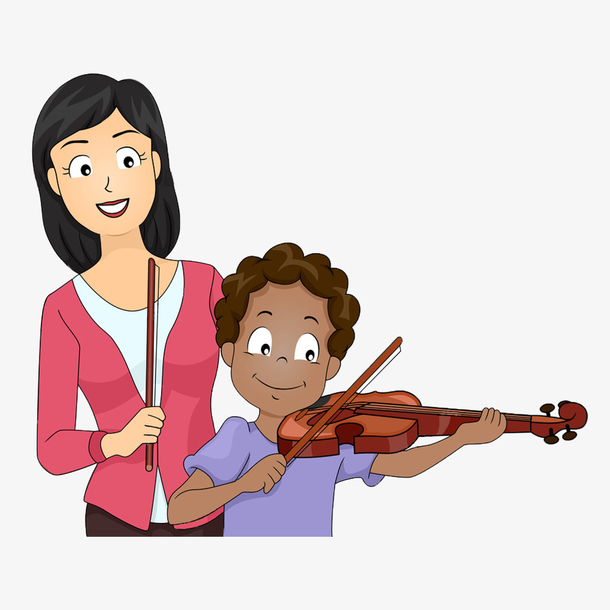
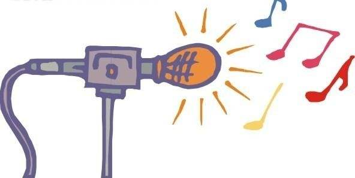

The ultimate goal of my website; Make music lovers more exposed to "real music." If you are interested in my website, you can contact me.
My main work : composition (pop music, classical music), violin teaching (crash course, we offering a one-to-one professional courses), systematic learning of music theory knowledge (harmony, orchestration, music theory, polyphonic music, music structure), professional recording. In the follow-up phase, we will continue to carry out teaching activities for other instruments.
If you are interested, please contact me.
best wishes.
Meng

